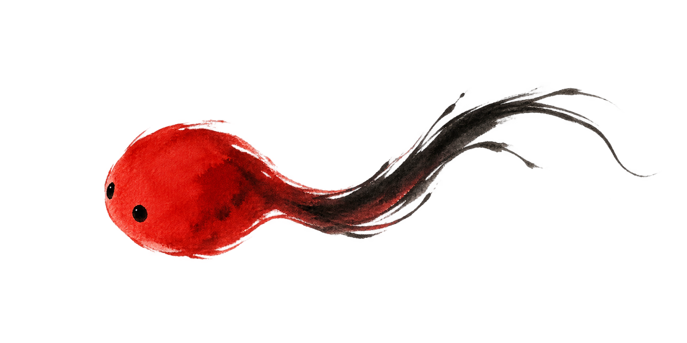

声
回 声 洞 · 墨 戏
研 墨 入 卷
正在唤醒纸上万物
铺开宣纸 · 0 / 9
0%
重 新 载 入
建议开启声音 · 戴耳机游玩
当前画卷
第
1
页 ·
起笔
本页目标
金墨
0
/
0
·
留白未开
墨灵
●●●
铃
3
· 诱
2
· 冲
声开
≡
诱
诱饵
冲
冲刺
铃
摇铃
壹 · 入 卷
九件画材已就绪

墨
回声洞
墨 戏 · ECHO CAVERN
你是一点
朱砂
，坠入墨色深处。脚步荡开回声，也会惊醒循声而来的墨影。看清路，藏住声，收齐金墨后归入留白。
本 卷 目 标
循声探路
→
收齐金墨
→
归入留白
五页迷卷
三命一局
可离线游玩
入 洞 手 札
三种器法 · 一条活路
以 声 见 路 · 以 静 藏 身
冲
朱砂冲
Shift / 冲键
穿影避伤，定影后击散
铃
朱铃
空格 / 铃键
照亮近路，暂时定住墨影
诱
墨石
Q / 诱键
制造假声，也可压住石板
读懂墨影：
？
正在调查声源
！
正在追击
定
可用冲刺击散。不要在死路连续发声。
落 笔 入 洞
开始第一卷 · 起笔
点击开始后将开启水墨配乐与音效
电脑 WASD 移动 · Shift 冲刺 · 空格摇铃 · Q 诱饵
手机 左侧移动与诱饵 · 右侧冲刺和摇铃
成
这 一 页 了
接 着 画
停 笔
继 续 画
重 画 此 页
回 主 卷
静 音